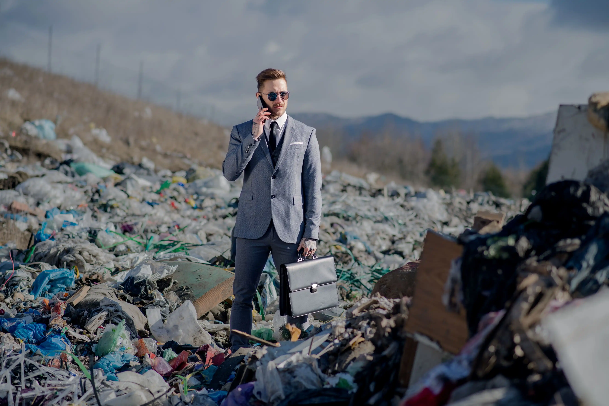
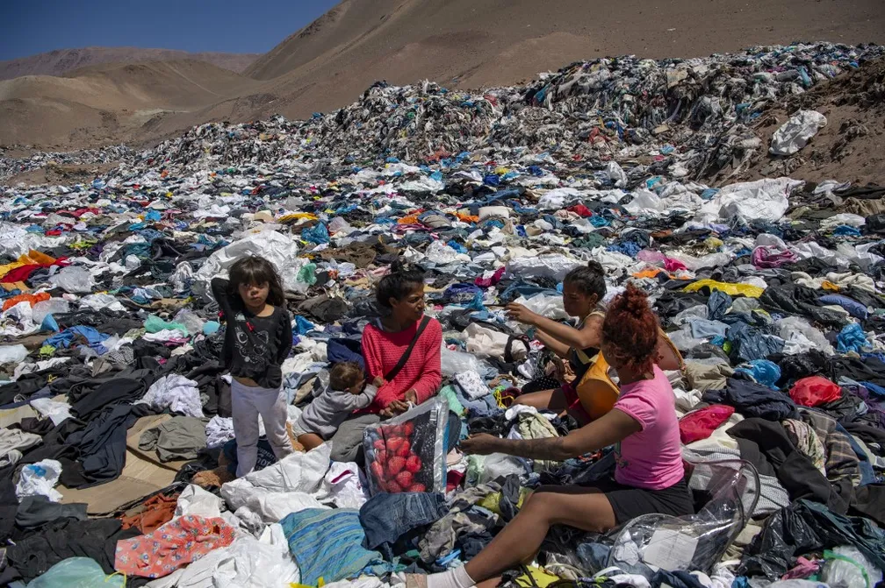

O que acontece com as roupas que compramos e descartamos com tanta facilidade?
A moda rápida, ou fast fashion, nos incentiva a estar sempre em dia com as últimas tendências, mas você já pensou no preço real disso? Não o preço que pagamos na loja, mas o custo para o planeta? Imagine o Deserto do Atacama, um lugar único no mundo, agora coberto por montanhas de roupas jogadas fora, vindas de todo o mundo. Roupas que, muitas vezes, usamos pouquíssimo. É assustador pensar que peças de roupa descartáveis estão transformando um dos lugares mais bonitos e isolados do planeta em um lixão tóxico. E cada vez que compramos sem pensar, estamos alimentando essa destruição
Agora, reflita sobre o que significa uma simples camiseta. Para produzi-la, são necessários milhares de litros de água e, enquanto isso, há pessoas e animais que mal têm acesso a água limpa. Os produtos químicos usados para dar cor e textura aos tecidos acabam nos rios, matando peixes e envenenando as águas. Esses mesmos rios que deveriam sustentar a vida estão sendo transformados em canais de poluição. E ainda tem mais: as fibras sintéticas, como o poliéster, não desaparecem quando descartamos as roupas. Elas se transformam em microplásticos que vão parar nos oceanos, são ingeridos por peixes e entram na nossa própria cadeia alimentar. Então, indiretamente, estamos comendo as consequências desse consumo desenfreado. A questão aqui é simples, mas poderosa: o que queremos para o nosso futuro? Precisamos mesmo de tantas roupas novas a cada estação? Ou é possível escolher com mais consciência, comprar menos e buscar peças que realmente durem? Cada um de nós tem o poder de fazer a diferença. É a nossa chance de mudar o rumo das coisas